House Mosaicing
Keypoints Used
We display the exact keypoints used for the first mosaicing task. The remaining display the best results found.
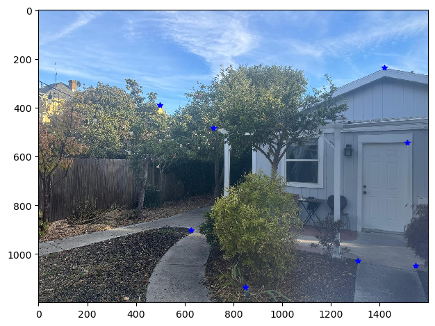
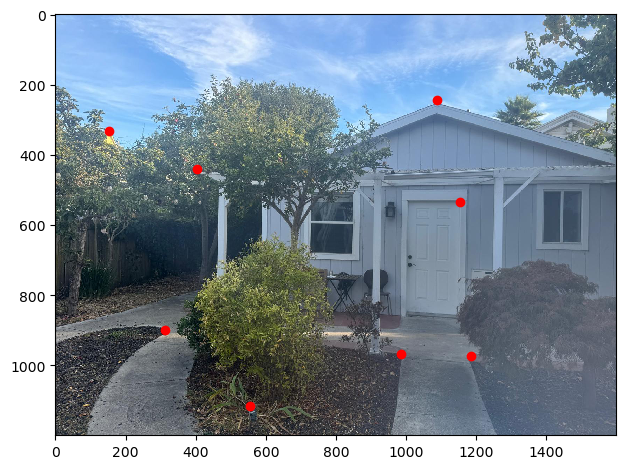
Mosaicing Results
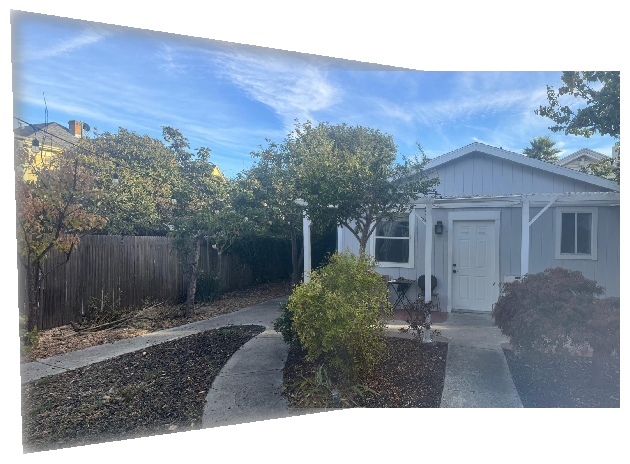
VLSB Mosaicing
Original Images
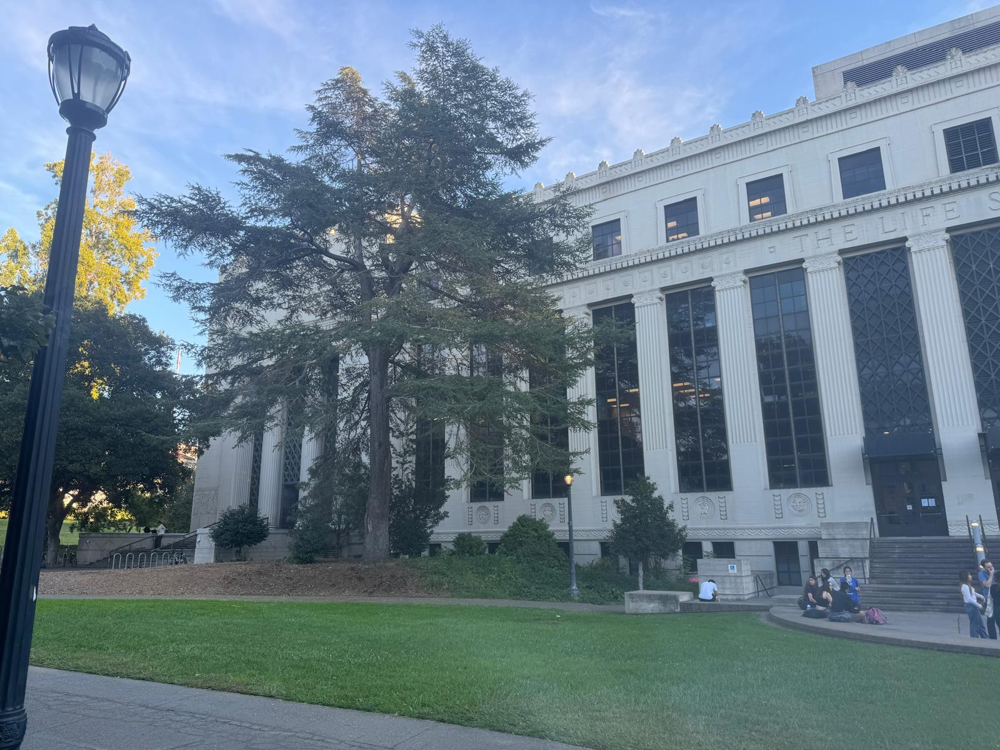
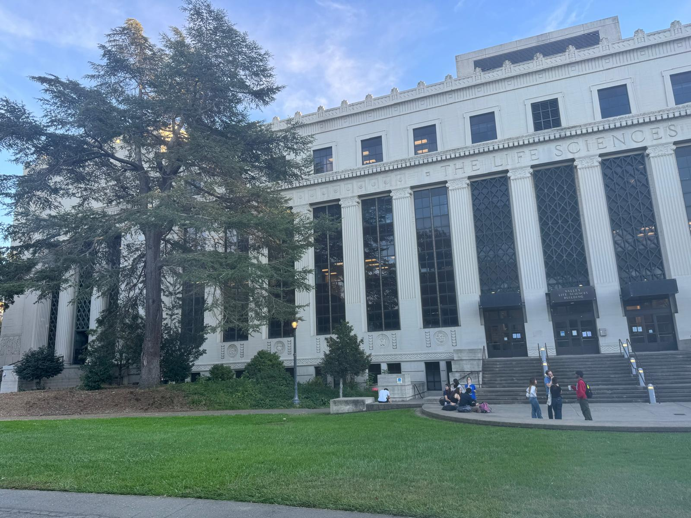
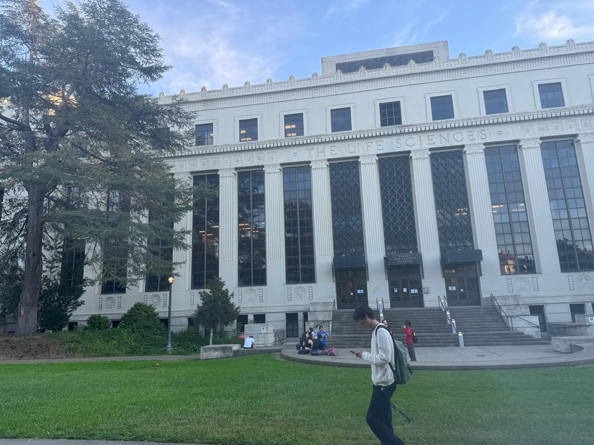
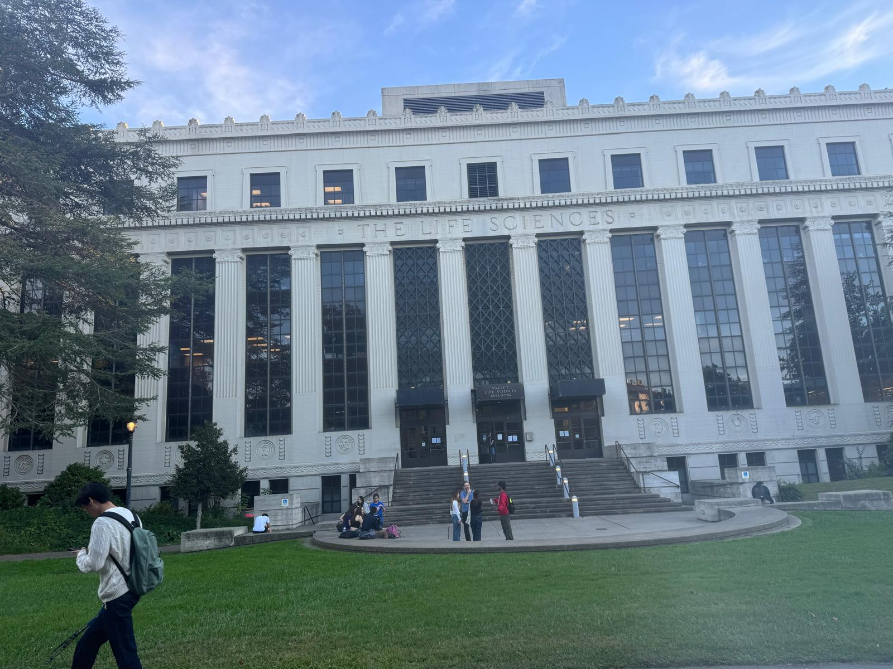
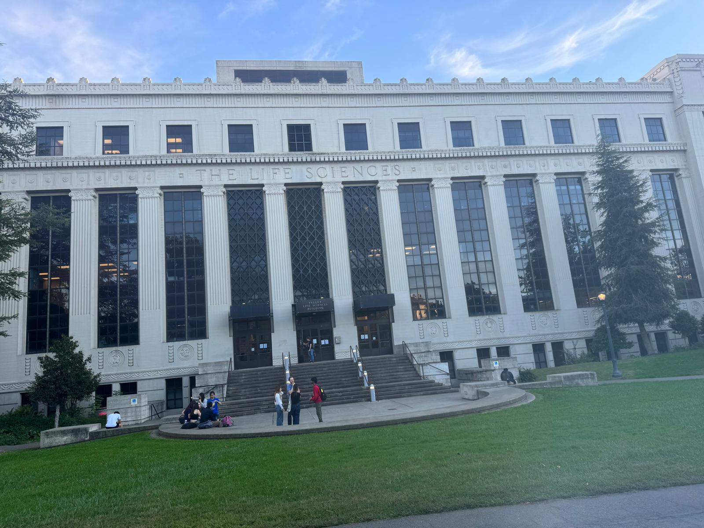
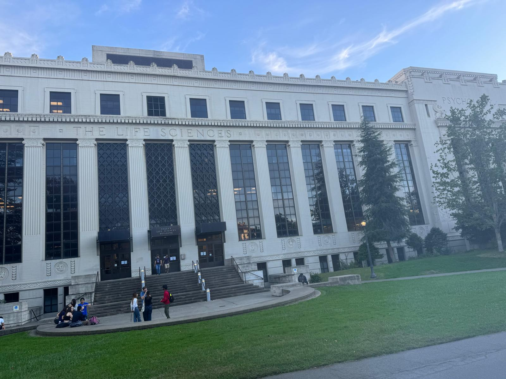
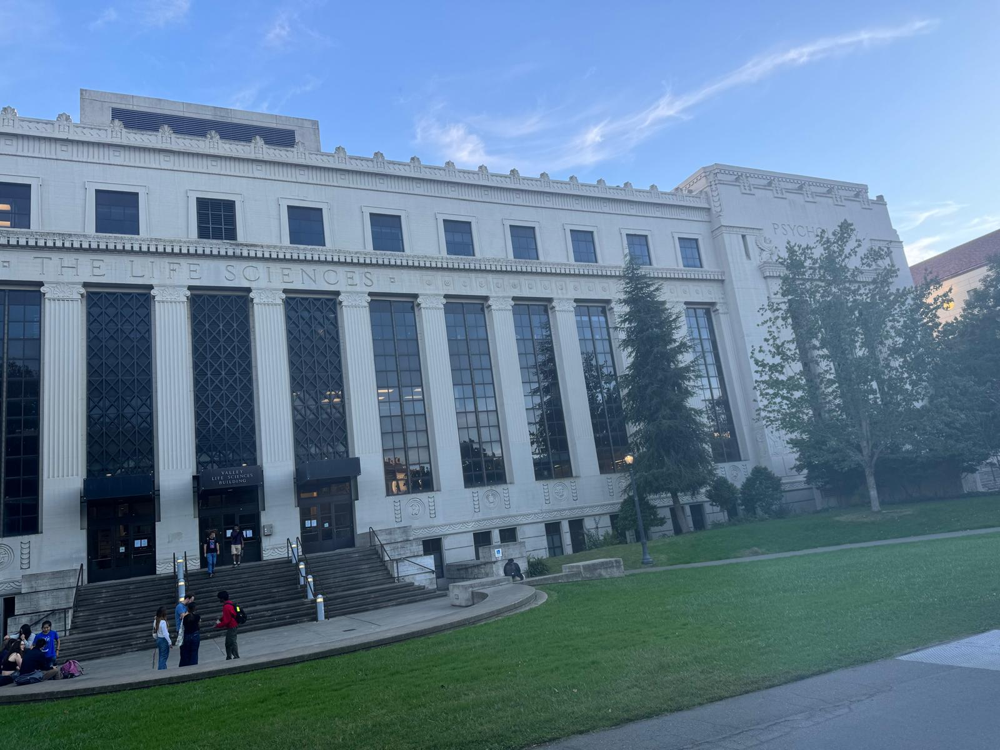
Mosaicing Results
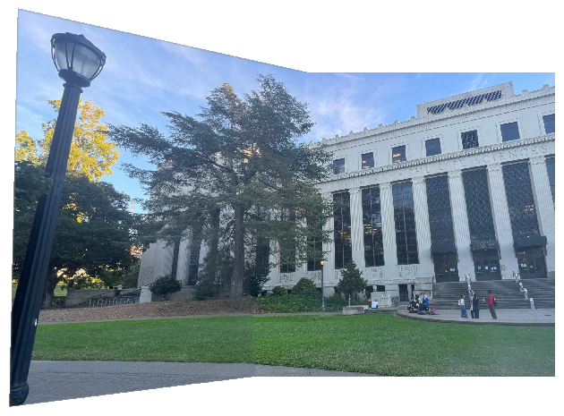
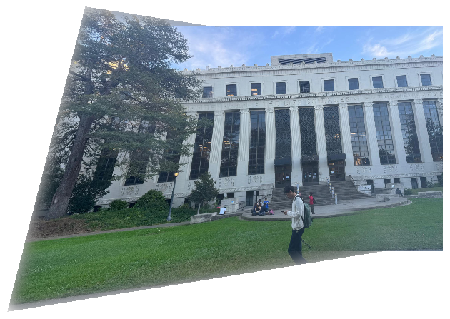
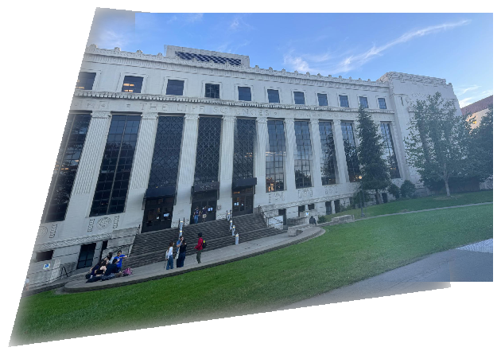
White Board Mosaicing
Images
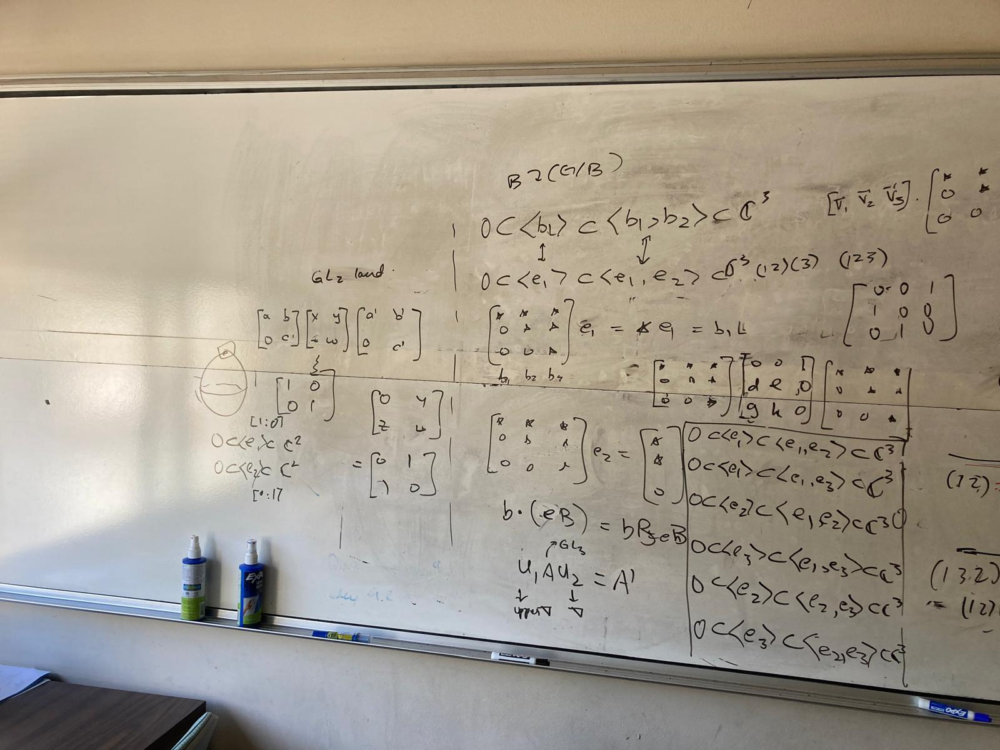
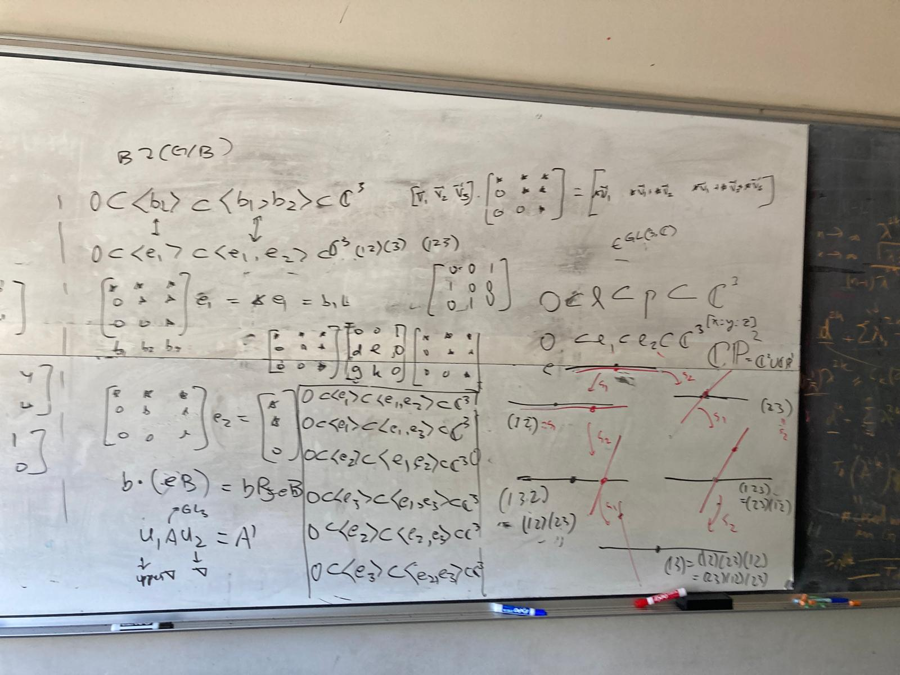
Mosaicing Results
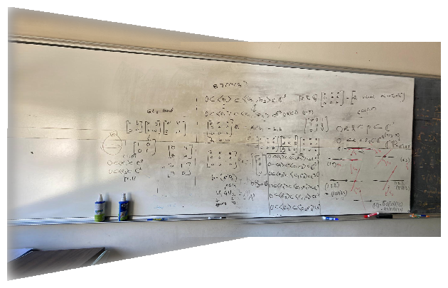
Note that the mosaicing is not very precise over here. There are two reasons: the first
is the dominant edges of the blackboard, and also that the camera likely moved from its
fixed point. These results will be improved with methods from 4b.